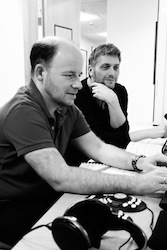

Clare recorded her third disc for BIS Records, of solo piano music by British composer Ken Hesketh, in August 2015. The disc was released on May 27 2016, is available on eClassical, Amazon and iTunes, and includes the following works:
▸ Horae (2013) - written for Clare and premiered at the Cheltenham Festival.
▸ Notte Oscura (2002)
▸ Through Magic Casements (2008)
▸ Three Japanese Miniatures (2002)
Movement 2 - 'Velocissima assai (as fleet as the tiniest humming bird)'
Movement 6 - 'Nervoso, ma dolce (flessibile)'
Movement 10 - 'Scorrevole (ma meccanico) (like an 'evening full of the linnet's wings')'
With the permission of Schott Music and BIS Records.
|
 | |
Click here to view more photos.
This disc has been supported by the following organisations:
 |
 |
▸ Fidelio Charitable Trust |
▸ RVW Trust |